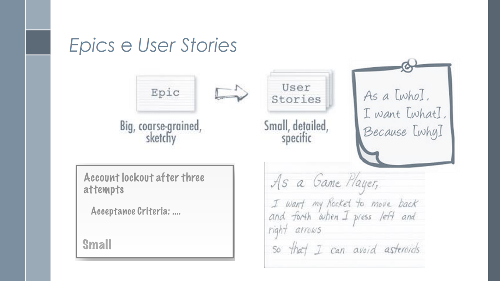
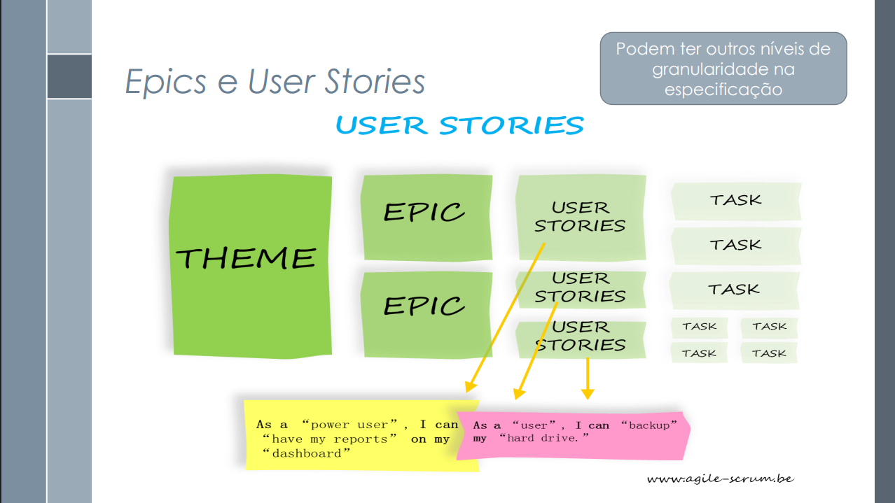
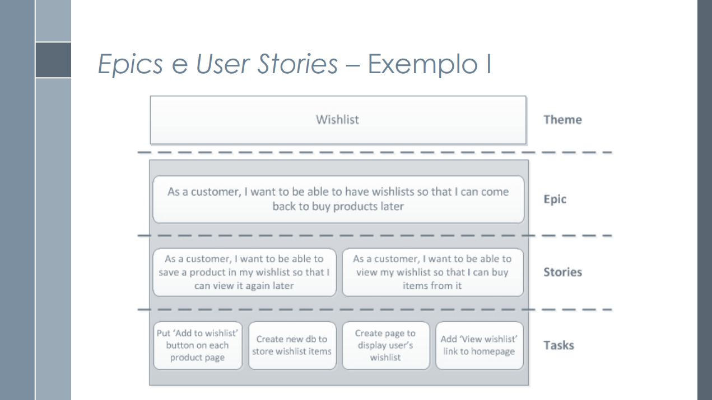

Estórias de Usuário
Introdução
Este documento tem como finalidade apresentar as Histórias de Usuário (User Stories) desenvolvidas para o sistema, seguindo as diretrizes estabelecidas pela Coordenação Geral de Tecnologia da Informação (CGTI). As histórias de usuário são uma técnica ágil utilizada para capturar requisitos de software de forma simples e centrada no usuário, descrevendo funcionalidades do ponto de vista de quem irá utilizá-las.
O presente documento serve como base para a validação das funcionalidades do sistema, garantindo que as necessidades dos usuários sejam atendidas de forma eficaz e que os critérios de aceite sejam claramente definidos.
Funções dos autores
A descrição das funções dos autores na criação e no desenvolvimento do artefato estão representadas na Tabela 1 abaixo.
| Nome | Função |
|---|---|
| Amanda Cruz | Criação das Histórias de Usuário: 32 até 37; Enumeração de tabelas e padronização; Adição das fontes exigidas pelo professor |
| João Pedro Costa | Criação do documento; Adaptação do template das historias no md; Adição das histórias de usuário de 19 a 25; Adição das referências |
| João Igor | Criação das Histórias de Usuário: 1 à 6 |
| Julia Gabriela | Revisão geral; Criação de 6 histórias de usuário |
| Gabriel Flores | Criação das histórias de usuário 20 até a 25 |
| Ryan Salles | Elaboração das Histórias de Usuário 26 à 31, Entrevista com o PO para validação, Elaboração inicial da Tabela X para rastreabilidade, Revisão |
Metodologia
A elaboração das histórias de usuário seguiu as seguintes diretrizes metodológicas:
- Linguagem do usuário: Utilização de terminologia familiar aos usuários finais, evitando jargões técnicos
- Estrutura direta: Emprego de ordem direta nas frases para maior clareza
- Objetividade: Evitar redundâncias e frases negativas no texto
- Colaboração: Desenvolvimento conjunto com o Product Owner e desenvolvedores
- Critérios mensuráveis: Definição de critérios de aceite claros e testáveis
As estórias foram validadas com a presença de um usuário, que ajudou a definir as prioridades e necessidade de implementação no aplicativo. Os participantes das entrevistas são apresentados por meio da Tabela 2 e 3.
| Participante | Função |
|---|---|
| Davi G. A. Pierre | Usuário/ Project Owner |
| João Pedro Costa | Desenvolvedor/Secretário |
| Julia Paulino | Desenvolvedora |
| Ryan Salles | Desenvolvedor/Entrevistador |
| Participante | Função |
|---|---|
| Lucas M. Arruda | Usuário/ Project Owner |
| João Pedro Costa | Desenvolvedora/Secretário |
| Ryan Salles | Desenvolvedor/Entrevistador |
A primeira reunião de validação, disponibilizada a seguir, foi realizada e gravada via Microsoft Teams no dia 30/05/2025.
A segunda reunião, que conteve um trecho sobre validação, disponibilizada a seguir, foi realizada e gravada via Microsoft Teams no dia 01/06/2025.
Objetivo
O objetivo deste documento é:
- Documentar de forma estruturada as necessidades dos usuários do sistema
- Estabelecer critérios claros de aceite para cada funcionalidade
- Facilitar a comunicação entre equipes de desenvolvimento e stakeholders
- Garantir rastreabilidade dos requisitos ao longo do ciclo de desenvolvimento
- Padronizar a especificação de funcionalidades seguindo boas práticas ágeis
Modelo de Estória de Usuário
O modelo de estrutura a ser seguido na criação das Estórias de Usuário pode ser visualizado através da Tabela 3.
| Campo | Descrição | Obrigatório |
|---|---|---|
| ID | Identificador único da história (formato: EU_XXX) | Sim |
| Título | Nome descritivo da funcionalidade | Sim |
| Objetivo | Descrição clara do propósito da história do ponto de vista do usuário | Sim |
| Perfil(s) | Usuários que utilizarão a funcionalidade | Sim |
| Critérios de Aceite | - xxx - xxx | Sim |
| Prioridade | Alta, Média ou Baixa | Sim |
| Rastreabilidade | Rastreabilidade do requisito | Sim |
| Implementado | Se está implementado ou não | Sim |
Estórias de Usuário
As Estórias (EU) de Usuário desenvolvidas para o projeto do Cadastro Único estão definidas, segundo o modelo explicado anteriormente, na Tabela 4 a 39.
EU_01 – Filtrar informações sobre benefícios sociais
| Campo | Descrição |
|---|---|
| ID | EU_01 |
| Título | Filtrar informações sobre benefícios socias |
| Objetivo | Eu, como usuário, gostaria de filtrar os serviços prestados, auxiliando minha busca |
| Perfil(s) | Pessoas que desejam se cadastrar ou já são cadastradas no CadÚnico |
| Critérios de Aceite | - O sistema deve exibir uma opção para selecionar os itens que o usuário desejar ver. |
| Prioridade | Média |
| Rastreabilidade | RF23 |
| Implementado | Não |
EU_02 – Alteração de dados cadastrais
| Campo | Descrição |
|---|---|
| ID | EU_02 |
| Título | Alteração de dados cadastrais |
| Objetivo | Eu, como usuário, gostaria de alterar meus dados pessoais durante o uso do aplicativo |
| Perfil(s) | Pessoas cadastradas no CadÚnico |
| Critérios de Aceite | O sistema deve ter uma área de alteração, que permita a troca dos dados do usuário. |
| Prioridade | Média |
| Rastreabilidade | RF20 |
| Implementado | Não |
EU_03 – Enviar notificações
| Campo | Descrição |
|---|---|
| ID | EU_03 |
| Título | Enviar notificações |
| Objetivo | Eu, como usuário, gostaria de receber notificações relacionadas ao meu cadastro. |
| Perfil(s) | Pessoas que já são cadastradas no CadÚnico |
| Critérios de Aceite | - O sistema deve enviar notificações de alerta acerca da situação cadastral do usuário. |
| Prioridade | Média |
| Rastreabilidade | RF17 |
| Implementado | Sim |
EU_04 – Cadastro de usuário
| Campo | Descrição |
|---|---|
| ID | EU_04 |
| Título | Cadastro de usuário |
| Objetivo | Eu, como usuário, gostaria de me cadastrar no CadÚnico. |
| Perfil(s) | Pessoas que já são cadastradas no CadÚnico |
| Critérios de Aceite | - O sistema deve permitir o cadastro de novos usuários, coletando informações pessoais como nome, CPF, endereço etc |
| Prioridade | Média |
| Rastreabilidade | RF19 |
| Implementado | Sim |
EU_05 – Pré-cadastrar Família
| Campo | Descrição |
|---|---|
| ID | EU_05 |
| Título | Pré-cadastrar família |
| Objetivo | Eu, como usuário, gostaria de realizar um pré-cadastro da minha família para ter acesso aos benefícios. |
| Perfil(s) | Pessoas que não cadastradas no CadÚnico |
| Critérios de Aceite | - O sistema deve permitir que uma pessoa não cadastrada no CadÚnico inicie um pré-cadastro para sua família. |
| Prioridade | Média |
| Rastreabilidade | RF15 |
| Implementado | Sim |
EU_06 – Consultar dados cadastrais
| Campo | Descrição |
|---|---|
| ID | EU_06 |
| Título | Consultar dados cadastrais |
| Objetivo | Eu, como usuário, gostaria de visualizar os dados que estão na plataforma. |
| Perfil(s) | Pessoas que já são cadastradas no CadÚnico |
| Critérios de Aceite | - O sistema deve exibir as informações de cadastro do usuário. |
| Prioridade | Média |
| Rastreabilidade | RF14 |
| Implementado | Sim |
História EU_07 – Possibilidade de outros idiomas
| Campo | Descrição |
|---|---|
| ID | EU_07 |
| Título | Possibilidade de outros idiomas |
| Objetivo | Eu, como usuário desejo poder acessar o aplicativo em outro idioma. |
| Perfil(s) | Usuários gerais do CadÚnico |
| Critérios de Aceite | - Qualquer usuário deve ser capaz de alterar o idioma do aplicativo, de forma que ele fique conciso Para mais detalhes cheque a introspecção: IS16 |
| Prioridade | Baixa |
| Rastreabilidade | RF39 |
| Implementado | Não |
História EU_08 – Modo escuro
| Campo | Descrição |
|---|---|
| ID | EU_08 |
| Título | Modo escuro |
| Objetivo | Eu, como usuário desejo poder acessar o aplicativo na forma escura. |
| Perfil(s) | Usuários gerais do CadÚnico |
| Critérios de Aceite | - Qualquer usuário deve ser capaz de configurar para seu aplicativo ficar no modo escuro, de forma que o constraste de cores continue com qualidade Para mais detalhes cheque a introspecção: IS15 |
| Prioridade | Média |
| Rastreabilidade | RF38 |
| Implementado | Não |
História EU_09– Visualização de informações cadastrais
| Campo | Descrição |
|---|---|
| ID | EU_09 |
| Título | Visualização de informações cadastrais |
| Objetivo | Eu, como usuário desejo poder visualizar minhas informações cadastrais |
| Perfil(s) | Usuários cadastrados no CadÚnico |
| Critérios de Aceite | - Qualquer usuário deve ser capaz de visualizar suas informações cadastrais Para mais detalhes cheque a entrevista: ENT2 |
| Prioridade | Alta |
| Rastreabilidade | RF25 |
| Implementado | Sim |
História EU_10 – Consulta de benefícios
| Campo | Descrição |
|---|---|
| ID | EU_10 |
| Título | Consulta de benefícios |
| Objetivo | Eu, como usuário desejo consultar a situação do meu benefício |
| Perfil(s) | Usuários com benefícios no CadÚnico |
| Critérios de Aceite | - Qualquer usuário deve ser capaz de visualizar as situações de seus benefícios. Para mais detalhes cheque a entrevista: ENT1 |
| Prioridade | Alta |
| Rastreabilidade | RF24 |
| Implementado | Sim |
História EU_11– Emissão de comprovante de cadastro
| Campo | Descrição |
|---|---|
| ID | EU_11 |
| Título | Emissão de comprovante de cadastro |
| Objetivo | Eu, como usuário desejo poder emitir um comprovante de cadastro no sistema |
| Perfil(s) | Usuários cadastrados no CadÚnico |
| Critérios de Aceite | - Qualquer usuário cadastrado deve ser capaz de emitir um comprovante de cadastro no sistema. Para mais detalhes cheque a introspecção: IS9 |
| Prioridade | Média |
| Rastreabilidade | RF22 |
| Implementado | Sim |
História EU_12– Atualização de dados
| Campo | Descrição |
|---|---|
| ID | EU_12 |
| Título | Atualização de dados |
| Objetivo | Eu, como usuário desejo poder atualizar os meus dados no sistema |
| Perfil(s) | Usuários cadastrados no CadÚnico |
| Critérios de Aceite | - Qualquer usuário cadastrado deve ser capaz atualizar seus dados pelo sistema. Para mais detalhes cheque a introspecção: IS7 |
| Prioridade | Alta |
| Rastreabilidade | RF20 |
| Implementado | Sim |
História EU_13 – Cadastro MEI
| Campo | Descrição |
|---|---|
| ID | EU_13 |
| Título | Registro da condição de MEI no cadastro do usuário |
| Objetivo | Eu, como usuário em processo de cadastro no CadÚnico, quero informar que sou Microempreendedor Individual para receber conteúdos e serviços direcionados. |
| Perfil(s) | Usuário em processo de cadastro no CadÚnico |
| Critérios de Aceite | - Exibir opção "Sou MEI" durante o cadastro. - Permitir marcação da opção. - Armazenar a informação no perfil. - Caso não marque, seguir fluxo normalmente. - Se selecionar "Sou MEI" sem CNPJ válido, solicitar verificação adicional. Para mais detalhes cheque o cenário: CN10 |
| Prioridade | Alta |
| Rastreabilidade | RF11 |
| Implementado | Não |
História EU_14 – Acesso a conteúdos informativos sobre MEI
| Campo | Descrição |
|---|---|
| ID | EU_14 |
| Título | Acesso a conteúdos informativos sobre microempreendedorismo |
| Objetivo | Eu, como usuário MEI autenticado no CadÚnico, quero acessar informações sobre obrigações, direitos e oportunidades para me informar melhor. |
| Perfil(s) | Usuário MEI autenticado no CadÚnico |
| Critérios de Aceite | - Permitir acesso à seção “MEI”. - Exibir conteúdos organizados por temas. - Navegar entre temas. - Exibir aviso para usuários não MEI. - Informar necessidade de conexão quando offline. Para mais detalhes cheque o cenário: CN11 |
| Prioridade | Média |
| Rastreabilidade | RF12 |
| Implementado | Não |
História EU_15 – Chat de Atendimento
| Campo | Descrição |
|---|---|
| ID | EU_15 |
| Título | Chat de Atendimento |
| Objetivo | Eu, como usuário, quero utilizar um chat de atendimento para receber suporte rápido e tirar dúvidas. |
| Perfil(s) | Usuário do CadÚnico |
| Critérios de Aceite | - O sistema deve disponibilizar um chat para atendimento. - Permitir troca de mensagens em tempo real. - Notificar usuário sobre respostas. - Registrar histórico das conversas. - Disponível em todas as telas do aplicativo. Para mais detalhes cheque o cenário: CN08 |
| Prioridade | Média |
| Rastreabilidade | RF26 |
| Implementado | Não |
História EU_16 – Agendamento no CRAS
| Campo | Descrição |
|---|---|
| ID | EU_16 |
| Título | Agendamento no CRAS |
| Objetivo | Eu, como usuário do CadÚnico, quero realizar o agendamento de atendimento no CRAS para evitar filas e facilitar o processo. |
| Perfil(s) | Usuário do CadÚnico |
| Critérios de Aceite | - O usuário acessa a opção "Agendamento de Atendimento" dentro do CadÚnico. - O sistema exibe calendário com horários disponíveis. - Usuário escolhe data, horário e local. - Sistema verifica disponibilidade no CRAS. - Confirma agendamento e envia notificação. - Atualiza status do agendamento no perfil do usuário. - Caso horário indisponível, sistema sugere outras opções. - Se sistema do CRAS estiver fora do ar, armazena tentativa para nova sincronização. Para mais detalhes cheque o cenário: CN14 |
| Prioridade | Alta |
| Rastreabilidade | RF30 |
| Implementado | Não |
História EU_17 – Cadastro de Famílias
| Campo | Descrição |
|---|---|
| ID | EU_17 |
| Título | Cadastro de Famílias |
| Objetivo | Eu, como usuário do CadÚnico, quero cadastrar famílias com renda mensal de até meio salário mínimo por pessoa ou vinculadas a programas sociais para garantir o acesso aos benefícios. |
| Perfil(s) | Usuário do CadÚnico |
| Critérios de Aceite | - O sistema permite cadastro de famílias com renda mensal até meio salário mínimo por pessoa. - Permite cadastro vinculado a programas sociais. - Valida dados obrigatórios de renda e vínculos. - Confirma registro com mensagem de sucesso. - Possibilita consulta e edição posterior do cadastro. |
| Prioridade | Alta |
| Rastreabilidade | RF01 |
| Implementado | Sim |
História EU_18 – Cadastro de Pessoas
| Campo | Descrição |
|---|---|
| ID | EU_18 |
| Título | Cadastro de Pessoas |
| Objetivo | Eu, como usuário do CadÚnico, quero registrar informações pessoais, como dados de identificação, documentação, frequência escolar e grau de instrução para compor corretamente o cadastro familiar. |
| Perfil(s) | Usuário do CadÚnico |
| Critérios de Aceite | - Permitir registro dos dados pessoais essenciais. - Validar campos obrigatórios. - Garantir integridade dos dados cadastrados. - Confirmar o cadastro com mensagem de sucesso. - Permitir consulta e edição dos dados pessoais. |
| Prioridade | Alta |
| Rastreabilidade | RF02 |
| Implementado | Sim |
História EU_19 – Cadastro de Domicílios
| Campo | Descrição |
|---|---|
| ID | EU_19 |
| Título | Cadastro de Domicílios |
| Objetivo | Eu, como usuário, quero registrar características do meu domicílio para que meu perfil tenha informações completas sobre minha residência. |
| Perfil(s) | Usuário do CadÚnico |
| Critérios de Aceite | - O sistema deve permitir o registro do tipo de construção. - Registrar informações sobre abastecimento de água. - Registrar tipo de iluminação. - Registrar escoamento sanitário. - Validar os dados informados e salvar no perfil. Para mais detalhes cheque o cenário: CN |
| Prioridade | Média |
| Rastreabilidade | RF03 |
| Implementado | Sim |
História EU_20 – Cadastro de Agricultores Familiares
| Campo | Descrição |
|---|---|
| ID | EU_20 |
| Título | Cadastro de Agricultores Familiares |
| Objetivo | Eu, como agricultor familiar, desejo cadastrar minhas informações no sistema para acessar benefícios específicos e garantir minha inclusão em programas sociais. |
| Perfil(s) | Agricultores familiares |
| Critérios de Aceite | - O sistema deve permitir o cadastro de agricultores familiares. - Deve validar os dados obrigatórios do agricultor. - O usuário deve receber confirmação do cadastro. |
| Prioridade | Alta |
| Rastreabilidade | RF04 |
| Implementado | Sim |
História EU_21 – Processamento de Dados
| Campo | Descrição |
|---|---|
| ID | EU_21 |
| Título | Processamento de Dados |
| Objetivo | Eu, como usuário, desejo que meus dados sejam processados corretamente para garantir a atualização e integridade das informações no sistema. |
| Perfil(s) | Usuários do CadÚnico |
| Critérios de Aceite | - O sistema deve processar os dados inseridos de forma automática. - Garantir a integridade e atualização das informações. - Notificar o usuário em caso de erro no processamento. |
| Prioridade | Alta |
| Rastreabilidade | RF06 |
| Implementado | Sim |
História EU_22 – Correção de Inconsistências
| Campo | Descrição |
|---|---|
| ID | EU_22 |
| Título | Correção de Inconsistências |
| Objetivo | Eu, como usuário, desejo corrigir inconsistências nos meus dados para garantir que meu cadastro esteja correto e atualizado. |
| Perfil(s) | Usuários do CadÚnico |
| Critérios de Aceite | - O sistema deve identificar e informar inconsistências nos dados. - Permitir ao usuário corrigir as informações. - Confirmar a correção e atualizar o cadastro. |
| Prioridade | Alta |
| Rastreabilidade | RF07 |
| Implementado | Sim |
História EU_23 – Localizar Postos de Atendimento
| Campo | Descrição |
|---|---|
| ID | EU_23 |
| Título | Localizar Postos de Atendimento |
| Objetivo | Eu, como usuário, desejo localizar os postos de atendimento mais próximos para facilitar meu acesso aos serviços do CadÚnico. |
| Perfil(s) | Usuários do CadÚnico |
| Critérios de Aceite | - O sistema deve exibir postos de atendimento próximos com base na localização do usuário. - Permitir busca por município ou endereço. - Exibir informações de contato e horários de funcionamento. |
| Prioridade | Média |
| Rastreabilidade | RF16 |
| Implementado | Sim |
História EU_24 – Notificação de Pendências ou Atualizações
| Campo | Descrição |
|---|---|
| ID | EU_24 |
| Título | Notificação de Pendências ou Atualizações |
| Objetivo | Eu, como usuário, desejo ser notificado sobre pendências ou atualizações no meu cadastro para manter meus dados sempre regulares. |
| Perfil(s) | Usuários do CadÚnico |
| Critérios de Aceite | - O sistema deve notificar o usuário sobre pendências ou atualizações necessárias. - Permitir visualização detalhada da pendência. - Orientar o usuário sobre como regularizar a situação. |
| Prioridade | Alta |
| Rastreabilidade | RF27 |
| Implementado | Não |
História EU_25 – Upload de Documentos
| Campo | Descrição |
|---|---|
| ID | EU_25 |
| Título | Upload de Documentos |
| Objetivo | Eu, como usuário, desejo enviar documentos digitalizados pelo aplicativo para complementar ou atualizar meu cadastro sem precisar ir presencialmente ao posto de atendimento. |
| Perfil(s) | Usuários do CadÚnico |
| Critérios de Aceite | - O sistema deve permitir upload de documentos em formatos aceitos. - Validar tipo e tamanho dos arquivos. - Confirmar o envio e associar ao cadastro do usuário. |
| Prioridade | Alta |
| Rastreabilidade | RF29 |
| Implementado | Não |
História EU_26 - Chatbot
| Campo | Descrição |
|---|---|
| ID | EU_26 |
| Título | Chatbot |
| Objetivo | "Eu, como usuário, gostaria de acessar um chatbot para responder dúvidas frequentes de forma rápida e efetiva" |
| Perfil(s) | Usuário do CadÚnico |
| Critérios de Aceite | - O usuário consegue acessar o sistema; - O chatbot é capaz de entender perguntas em linguagem natural; - O chatbot é capaz de responder as dúvidas mais frequentes dos usuários |
| Prioridade | Baixa |
| Rastreabilidade | RF26 |
| Implementado | Não |
História EU_27 - Chat de Atendimento
| Campo | Descrição |
|---|---|
| ID | EU_27 |
| Título | Chat de atendimento |
| Objetivo | "Eu, como usuário, gostaria de uma linha de acesso direto a um atendente cuja experiência e capacidades técnicas para resolver rapidamente problemas, requisições, dúvidas e dificuldades sem a necessidade de ir a um CRAS" |
| Perfil(s) | Usuário do CádÚnico |
| Critérios de Aceite | - O usuário consegue acessar o sistema - O atendente é capaz de receber e enviar mensagens em tempo real - O usuário é capaz de receber e enviar mensagens em tempo real |
| Prioridade | Alta |
| Rastreabilidade | RF34 |
| Implementado | Não |
História EU_28 - Tutoriais Interativos
| Campo | Descrição |
|---|---|
| ID | EU_ 28 |
| Título | Tutoriais Interativos |
| Objetivo | "Eu, como usuário novo, gostaria de ser guiado pelo aplicativo de forma automática na forma de um tutorial interativo para conhecer as funções e operações disponíveis no aplicativo e facilitar meu aprendizado e uso da ferramenta" |
| Perfil(s) | Usuário novo do CadÚnico |
| Critérios de Aceite | - O tutorial é oferecido ao usuário quando ele entra no aplicativo pela primeira vez - O tutorial explica e exemplifica o uso das principais funcionalidades e operações do aplicativo |
| Prioridade | Média |
| Rastreabilidade | RF35 |
| Implementado | Não |
História EU_29 - Assistência por voz
| Campo | Descrição |
|---|---|
| ID | EU_29 |
| Título | Assistência por voz |
| Objetivo | "Eu, como usuário, gostaria de ser capaz de controlar o aplicativo por voz para que possa acessar as funcionalidades sem a necessidade de ver a tela" |
| Perfil(s) | Usuário com baixa ou nenhuma visibilidade |
| Critérios de Aceite | - O aplicativo deve ser capaz de reconhecer a voz do usuário - O aplicativo deve ser capaz de realizar operações a partir de comandos por voz - O aplicativo, mediante boa pronúncia e um microfone funcionando segundo especificação do fabricante do dispositivo, possuir taxa de acerto do comando pronunciado de no mínimo 95% |
| Prioridade | Alta |
| Rastreabilidade | RF37 |
| Implementado | Não |
História EU_30 - Simular benefícios
| Campo | Descrição |
|---|---|
| ID | EU_30 |
| Título | Simular benefícios |
| Objetivo | Eu, como usuário, gostaria de simular os benefícios segundo meus dados cadastrados para que possa garantir acesso aos meus direitos de forma mais fácil e informada. |
| Perfil(s) | Usuário do CadÚnico |
| Critérios de Aceite | - O usuário é capaz de simular os benefícios possíveis - O aplicativo deve ser capaz de gerar um pré-relatório com validade para uso em um CRAS - O aplicativo deve simular os benefícios utilizando os dados do usuário cadastrado de forma correta - O relatório gerado deve ser enviado ao sistema para que possa estar disponível para atendentes |
| Prioridade | Alta |
| Rastreabilidade | RF33 |
| Implementado | Não |
História EU_31 - Notificações Personalizadas
| Campo | Descrição |
|---|---|
| ID | EU_31 |
| Título | Notificações personalizadas |
| Objetivo | "Eu, como usuário, gostaria de receber notificações personalizadas segundo meu perfil de usuário para me manter atualizado sobre minha situação específica " |
| Perfil(s) | Usuário |
| Critérios de Aceite | - O aplicativo deve ser capaz de enviar notificações - O aplicativo deve possuir forma de configuração de notificações - O sistema de notificação deve ser capaz de ser desativado |
| Prioridade | Baixa |
| Rastreabilidade | RF09 |
| Implementado | Não |
História EU_32 - Coleta de Dados via Formulários
| Campo | Descrição |
|---|---|
| ID | EU_32 |
| Título | Coleta de Dados via Formulários |
| Objetivo | "Eu, como Usuário, quero usar formulários no aplicativo para conseguir registrar facilmente todos os dados importantes sobre domicílios, famílias, pessoas, suas ligações com programas sociais e informações de quem vive na rua, para que o aplicativo tenha dados sempre corretos e atualizados." |
| Perfil(s) | Usuário |
| Critérios de Aceite | - O aplicativo deve oferecer formulários principais e suplementares para o cadastro. - O sistema deve permitir o registro completo de informações de domicílios, famílias e indivíduos. - O sistema deve permitir o registro da vinculação a programas sociais e de dados específicos sobre pessoas em situação de rua. |
| Prioridade | Alta |
| Rastreabilidade | RF10 |
| Implementado | Sim |
História EU_33 - Atualização dos Dados Familiares
| Campo | Descrição |
|---|---|
| ID | EU_33 |
| Título | Atualização dos Dados Familiares |
| Objetivo | "Eu, como Usuário, quero poder atualizar facilmente os dados cadastrais da minha família para que estejam de acordo e possamos manter o nosso acesso a programas e benefícios sociais." |
| Perfil(s) | Usuário responsável da família |
| Critérios de Aceite | - O sistema deve permitir a edição das informações pessoais dos membros da família. - O sistema deve permitir a alteração dos dados de endereço e renda da família. - O sistema deve salvar as modificações e confirmar que os dados da família foram atualizados. |
| Prioridade | Alta |
| Rastreabilidade | RF05 |
| Implementado | Sim |
História EU_34 - Importação Automática de Dados do CNIS
| Campo | Descrição |
|---|---|
| ID | EU_34 |
| Título | Importação Automática de Dados do CNIS |
| Objetivo | "Eu, como Usuário, quero que o sistema busque e importe automaticamente os dados de vínculos empregatícios e contribuições diretamente do CNIS, para que o processo de cadastro seja mais rápido, com informações mais precisas e menos sujeito a erros de digitação." |
| Perfil(s) | Usuário |
| Critérios de Aceite | - O sistema deve ter a capacidade de se conectar ao CNIS para consultar dados de um cidadão (com as devidas autorizações). - O sistema deve importar e exibir de forma clara para os dados retornados pelo CNIS. - O sistema deve permitir que o usuário utilize os dados importados do CNIS para preencher ou validar as informações. |
| Prioridade | Média |
| Rastreabilidade | RF18 |
| Implementado | Sim |
História EU_35 - Suporte com Vídeos Explicativos
| Campo | Descrição |
|---|---|
| ID | EU_35 |
| Título | Suporte com Vídeos Explicativos |
| Objetivo | "Eu, como Usuário, quero poder assistir a vídeos dentro do aplicativo que expliquem as principais funcionalidades e processos, para que eu consiga entender melhor como usar o sistema e ganhar mais confiança." |
| Perfil(s) | Usuário novo ou com dificuldades digitais |
| Critérios de Aceite | - O aplicativo deve possuir uma área ou links contextuais para acesso a vídeos explicativos. - Os vídeos devem abordar o uso das funcionalidades mais importantes ou que geram mais dúvidas. - Os vídeos devem ter linguagem simples, ser curtos e de fácil compreensão. |
| Prioridade | Média |
| Rastreabilidade | RF36 |
| Implementado | Não |
História EU_36 - Conteúdo MEI Personalizado por Setor e Região
| Campo | Descrição |
|---|---|
| ID | EU_36 |
| Título | Conteúdo MEI Personalizado por Setor e Região |
| Objetivo | "Eu, como Usuário MEI, quero que os conteúdos e informações da seção MEI do sistema sejam adaptados ao meu setor de atividade e à minha região, para que eu possa encontrar facilmente orientações e recursos que sejam verdadeiramente relevantes para o meu negócio." |
| Perfil(s) | Usuário MEI |
| Critérios de Aceite | - O sistema deve identificar o setor de atuação e a região do Usuário MEI a partir dos seus dados cadastrais. - O sistema deve exibir conteúdos na seção MEI que sejam especificamente relevantes para o setor de atuação e região geográfica do usuário." |
| Prioridade | Alta |
| Rastreabilidade | RF13 |
| Implementado | Não |
História EU_37 - Integração com Sistemas MEI
| Campo | Descrição |
|---|---|
| ID | EU_37 |
| Título | Integração com Sistemas MEI |
| Objetivo | "Eu, como Usuário MEI, quero que o sistema possa trocar informações de forma segura e padronizada com outros sistemas relevantes para Microempreendedores Individuais, para simplificar meus processos, evitar redigitação e manter minhas informações consistentes entre as plataformas." |
| Perfil(s) | Usuário MEI |
| Critérios de Aceite | - O sistema deve ser capaz de se comunicar com sistemas externos designados para MEIs. - O sistema deve permitir o envio e/ou recebimento de dados específicos de MEIs de/para esses sistemas externos. - A troca de dados com os sistemas MEI deve ser realizada de forma segura. |
| Prioridade | Alta |
| Rastreabilidade | RF39 |
| Implementado | Não |
História EU_38 - Login com GOV.br
| Campo | Descrição |
|---|---|
| ID | EU_38 |
| Título | Login com GOV.br |
| Objetivo | "Eu, como Usuário, quero que o sistema possibilite que o login e autenticação sejam feitos utilizando o GOV.br para que o processo de utilizar o aplicativo seja mais eficaz, prático e não seja necessário criar um login específico para a utilização dos sistemas" |
| Perfil(s) | Usuário |
| Critérios de Aceite | - O sistema deve ser capaz processar e autenticar um usuário. - A autenticação do usuário para uso do sistema deve ser feita utilizando os sistemas do GOV.br. |
| Prioridade | Alta |
| Rastreabilidade | RF40 |
| Implementado | Sim |
Rastreabilidade
A Tabela 42 apresenta a rastreabilidade geral das histórias de usuário para os requisitos elicitados e cenários utilizados para elaboração e compreensão dos critérios de aceitação.
| Estória de Usuário | Requisito | Cenário |
|---|---|---|
| EU_01 | RF24 | CN07 |
| EU_02 | RF20 | CN14 |
| EU_03 | RF17 | CN03 |
| EU_04 | RF19 | CN03 |
| EU_05 | RF15 | CN06 |
| EU_06 | RF14 | - |
| EU_07 | RF39 | - |
| EU_08 | RF38 | CN09 |
| EU_09 | RF25 | - |
| EU_10 | RF24 | CN01 |
| EU_11 | RF22 | - |
| EU_12 | RF20 | - |
| EU_13 | RF11 | CN13, CN10 |
| EU_14 | RF12 | CN11 |
| EU_15 | RF26 | CN08 |
| EU_16 | RF30 | CN14 |
| EU_17 | RF01 | - |
| EU_18 | RF02 | CN03 |
| EU_19 | RF03 | - |
| EU_20 | RF04 | - |
| EU_21 | RF06 | CN06 |
| EU_22 | RF07 | - |
| EU_23 | RF16 | CN05 |
| EU_24 | RF27 | - |
| EU_25 | RF29 | CN16 |
| EU_26 | RF26 | CN08 |
| EU_27 | RF34 | - |
| EU_28 | RF35 | CN15 |
| EU_29 | RF37 | - |
| EU_30 | RF33 | CN07 |
| EU_31 | RF09 | - |
| EU_32 | RF10 | - |
| EU_33 | RF05 | - |
| EU_34 | RF18 | - |
| EU_35 | RF36 | - |
| EU_36 | RF13 | CN12 |
| EU_37 | RF39 | CN13 |
| EU_38 | RF40 | - |
Referências
COORDENAÇÃO GERAL DE TECNOLOGIA DA INFORMAÇÃO - CGTI. EU_xxx_Titulo_da_Estoria_de_Usuario: template para especificação de histórias de usuário. [S.l.]: CGTI, 2018. 5 p. Disponível em: História de Usuário. Acesso em: 22 de maio 2025.
PRESSMAN, Roger S.; MAXIM, Bruce R.. Engenharia de software: uma abordagem profissional. 8 Porto Alegre: AMGH, 2016, p. 73. Acesso em: 28 de maio 2025.
SERRANO, Milene; SERRANO, Maurício. Requisitos – Aula 15a [slide em PDF], P. 12 - 14. Aprender3, Universidade de Brasília, 2025. Disponível em: https://aprender3.unb.br/pluginfile.php/3096144/mod_resource/content/1/Requisitos%20-%20Aula%2015a.pdf. Acesso em: 01 jun. 2025.
O que é História de Usuário? (User Story)
As Figuras 1 a 3 a seguir explicam o que são as histórias de usuário, também exemplificando os critérios de aceitação, e foram responsáveis por auxiliar o processo de criação do artefato.



Histórico de Versão
| Versão | Data | Descrição | Autor | Revisor |
|---|---|---|---|---|
| 1.0 | 22/05/2025 | Criação do Documento | João Pedro Costa | Julia Gabriela |
| 1.1 | 22/05/2025 | Adaptação do template das histórias de usuário e adição de referências | João Pedro Costa | Julia Gabriela |
| 1.2 | 26/05/2025 | Adição das minhas Histórias de Usuário | João Igor | Julia Gabriela |
| 1.3 | 28/05/2025 | Adição de Historias de Usuário de 19 a 25 | João Pedro Costa | Julia Gabriela |
| 1.4 | 29/05/2025 | Adição de 6 Histórias de Usuário, correção dos IDs | Julia Gabriela | João Pedro Costa |
| 1.5 | 29/05/2025 | Adição da histórias de usuário 20 até 25 | Gabriel Flores | João Pedro Costa |
| 1.6 | 01/06/2025 | Adição da histórias de usuário 32 a 37 | Amanda Cruz | Ryan Salles |
| 1.7 | 01/06/2025 | Padronização do documento e enumeração de tabelas | Amanda Cruz | Ryan Salles |
| 1.8 | 01/06/2025 | Atualização da numeração de tabelas, inserção de entrevista, tabela de rastreabilidade e estórias de 26 a 31 | Ryan Salles | Amanda Cruz |
| 1.9 | 01/06/2025 | Adição de imagens das referências | Amanda Cruz | Ryan Salles |